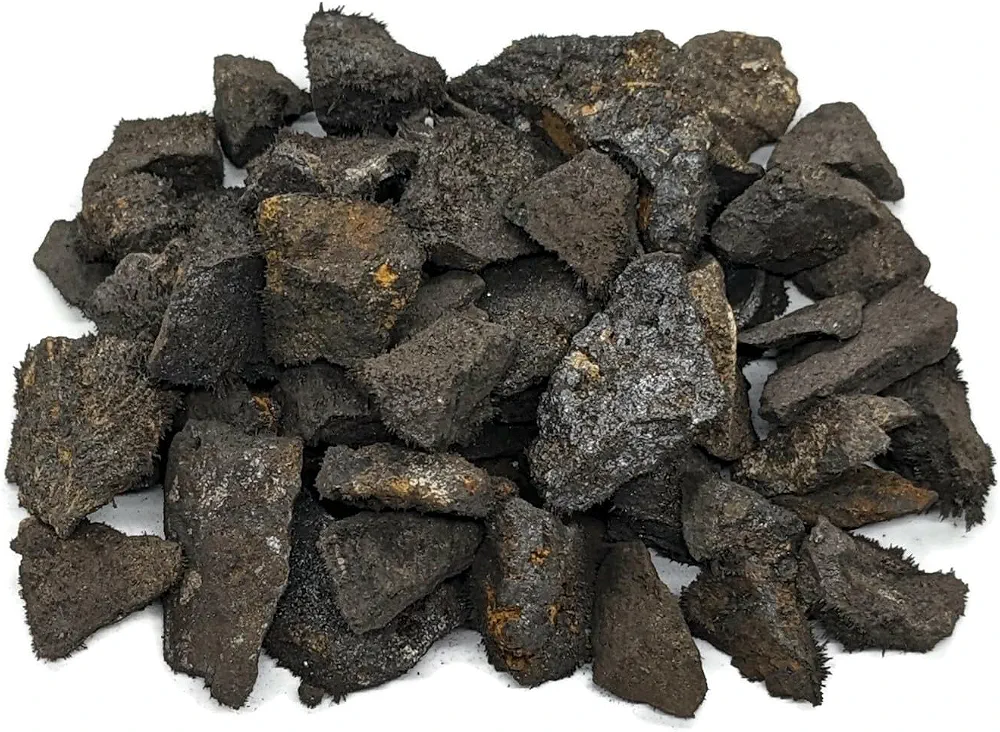
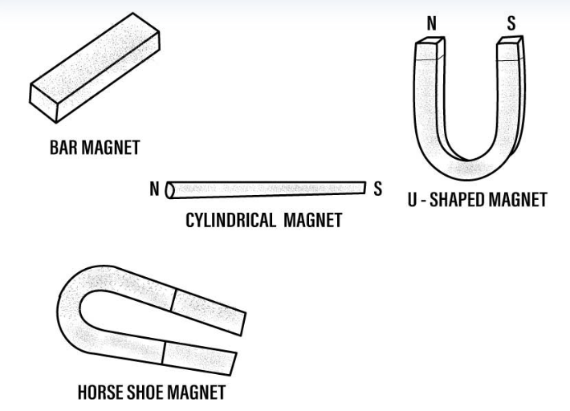
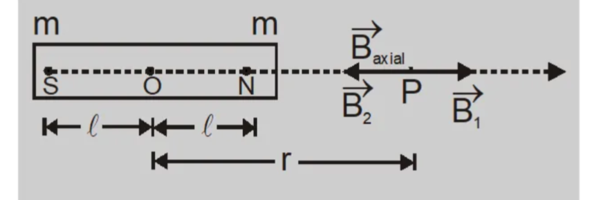
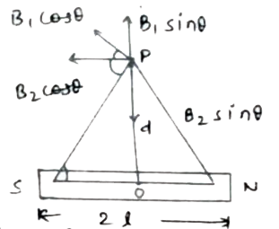
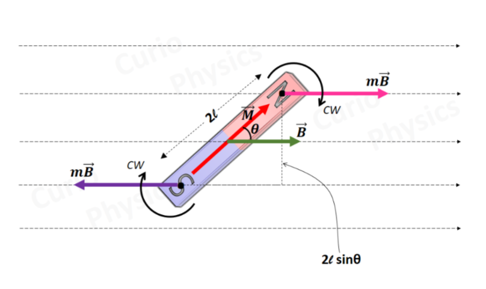
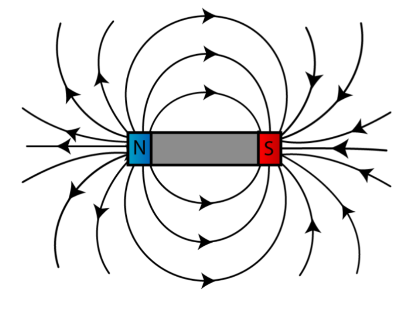

चुंबक द्वारा चुंबकीय पदार्थों को आकर्षित करने के गुण को चुंबकत्व (Magnetism) कहते हैं।
प्रश्न: चुंबक किसे कहते हैं?
वह पदार्थ जो चुंबकीय पदार्थों को आकर्षित करता है, चुंबक (Magnet) कहलाता है।
प्रश्न: चुंबकीय पदार्थ किसे कहते हैं?
जो पदार्थ चुंबक द्वारा आकर्षित होते हैं अथवा जिनमें चुंबकत्व उत्पन्न किया जा सकता है, उन्हें चुंबकीय पदार्थ (Magnetic Materials) कहते हैं।
उदाहरण: लोहा (Iron), निकेल (Nickel) तथा कोबाल्ट (Cobalt)।
प्रश्न: चुंबक और चुंबकीय पदार्थ में अंतर लिखिए।
चुंबक (Magnet)
चुंबकीय पदार्थ (Magnetic Material)
इसमें स्थायी उत्तर एवं दक्षिण ध्रुव होते हैं।
इसमें स्थायी ध्रुव नहीं होते।
इसके चुंबकीय गुण स्थायी होते हैं।
इसके चुंबकीय गुण सामान्यतः अस्थायी होते हैं।
यह स्वयं अन्य चुंबकीय पदार्थों को आकर्षित करता है।
यह केवल चुंबक के प्रभाव में आने पर आकर्षित होता है तथा चुंबकीय गुण प्रदर्शित करता है।
उदाहरण: दण्ड चुंबक, अश्वनाल चुंबक।
उदाहरण: लोहा, निकेल, कोबाल्ट।
प्रश्न: प्राकृतिक चुंबक एवं कृत्रिम चुंबक किसे कहते हैं?
1. प्राकृतिक चुंबक (Natural Magnet):
प्रकृति से स्वतः प्राप्त होने वाले चुंबक को प्राकृतिक चुंबक कहते हैं। इनकी आकृति अनिश्चित होती है तथा ये अपेक्षाकृत कम शक्तिशाली होते हैं।

उदाहरण: लोडस्टोन (Lodestone)
2. कृत्रिम चुंबक (Artificial Magnet):
मानव द्वारा निर्मित चुंबक को कृत्रिम चुंबक कहते हैं। इन्हें आवश्यकता के अनुसार विभिन्न आकारों में बनाया जा सकता है तथा ये प्राकृतिक चुंबकों की अपेक्षा अधिक शक्तिशाली होते हैं।
प्रश्न: कृत्रिम चुंबक कितने प्रकार के होते हैं?
कृत्रिम चुंबक मुख्यतः दो प्रकार के होते हैं—
स्थायी चुंबक (Permanent Magnet)
अस्थायी चुंबक (Temporary Magnet)
प्रश्न: स्थायी चुंबक एवं अस्थायी चुंबक किसे कहते हैं?
1. अस्थायी चुंबक (Temporary Magnet):
ऐसे चुंबक जिनका चुंबकत्व स्थायी नहीं होता, उन्हें अस्थायी चुंबक कहते हैं। ये सामान्यतः नरम (कच्चे) लोहे के बनाए जाते हैं। इनका चुंबकत्व आसानी से उत्पन्न किया जा सकता है तथा शीघ्र ही समाप्त भी हो जाता है।
2. स्थायी चुंबक (Permanent Magnet):
ऐसे चुंबक जिनका चुंबकत्व लंबे समय तक बना रहता है, उन्हें स्थायी चुंबक कहते हैं। ये प्रायः कठोर स्टील, निकेल तथा कोबाल्ट से बनाए जाते हैं। इनका चुंबकत्व शीघ्र नष्ट नहीं होता।

प्रश्न: स्थायी चुंबक स्टील के बनाए जाते हैं तथा ट्रांसफॉर्मर का क्रोड कच्चे लोहे का बनाया जाता है, क्यों?
स्थायी चुंबक स्टील के बनाए जाते हैं, क्योंकि स्टील में एक बार उत्पन्न हुआ चुंबकत्व लंबे समय तक बना रहता है।
ट्रांसफॉर्मर का क्रोड नरम (कच्चे) लोहे का बनाया जाता है, क्योंकि उसमें चुंबकत्व केवल धारा प्रवाहित रहने तक रहता है तथा धारा बंद होते ही समाप्त हो जाता है।
प्रश्न: चुंबक के ध्रुव किसे कहते हैं?
चुंबक के सिरों पर जहाँ चुंबकीय आकर्षण सर्वाधिक होता है, उन स्थानों को चुंबकीय ध्रुव (Magnetic Poles) कहते हैं।
प्रत्येक चुंबक के दो ध्रुव होते हैं—
उत्तरीय ध्रुव (North Pole)
दक्षिणीय ध्रुव (South Pole)
प्रश्न: चुंबक के गुण एवं विशेषताएँ लिखिए।
चुंबक के प्रमुख गुण एवं विशेषताएँ निम्नलिखित हैं—
चुंबक चुंबकीय पदार्थों को अपनी ओर आकर्षित करता है।
स्वतंत्र रूप से लटकाने पर यह सदैव उत्तर–दक्षिण दिशा में स्थिर हो जाता है।
चुंबक के ध्रुवों को किसी भी प्रकार अलग नहीं किया जा सकता। यदि चुंबक को कितने भी टुकड़ों में तोड़ा जाए, तो प्रत्येक टुकड़े में उत्तर एवं दक्षिण दोनों ध्रुव उपस्थित रहते हैं।
किसी लोहे की वस्तु को चुंबक से एक ही दिशा में बार-बार रगड़कर उसे चुंबकीय बनाया जा सकता है।
चुंबक को बार-बार गिराने, हथौड़े से ठोकने अथवा अधिक गर्म करने पर उसका चुंबकत्व नष्ट या कम हो सकता है।
प्रश्न: चुंबकत्व के आण्विक सिद्धांत को लिखिए।
चुंबकत्व का आण्विक सिद्धांत (Molecular Theory of Magnetism):
चुंबकत्व के आण्विक सिद्धांत के अनुसार—
प्रत्येक चुंबकीय पदार्थ असंख्य छोटे-छोटे सूक्ष्म चुंबकों से मिलकर बना होता है, जिन्हें मूल चुंबक (Molecular Magnets) कहते हैं।
प्रत्येक मूल चुंबक में दो ध्रुव होते हैं—
उत्तरीय ध्रुव (North Pole)
दक्षिणीय ध्रुव (South Pole)
किसी भी मूल चुंबक के उत्तरीय एवं दक्षिणीय ध्रुवों को एक-दूसरे से अलग नहीं किया जा सकता।
सामान्य अवस्था में ये सभी मूल चुंबक विभिन्न दिशाओं में अनियमित रूप से व्यवस्थित रहते हैं, इसलिए पदार्थ चुंबकीय गुण प्रदर्शित नहीं करता।
जब पदार्थ को किसी चुंबकीय क्षेत्र में रखा जाता है, तब उसके सभी मूल चुंबक एक ही दिशा में व्यवस्थित हो जाते हैं, जिससे पदार्थ चुंबक की भाँति व्यवहार करने लगता है।
प्रश्न: चुंबक का विनाश से क्या अभिप्राय है?
जब किसी चुंबक को बार-बार गिराया जाए, हथौड़े से ठोका जाए अथवा अधिक गर्म किया जाए, तो उसका चुंबकत्व नष्ट या कम हो जाता है। इस प्रक्रिया को चुंबकीय विनाश (Demagnetisation) कहते हैं।
प्रश्न: चुंबकीय प्रेरण किसे कहते हैं?
जब किसी चुंबकीय पदार्थ को किसी चुंबक के निकट लाने या उसके चुंबकीय क्षेत्र में रखने पर उसमें बिना स्पर्श किए चुंबकत्व उत्पन्न हो जाता है, तो इस प्रक्रिया को चुंबकीय प्रेरण (Magnetic Induction) कहते हैं।
प्रश्न: ध्रुव प्रबल्य किसे कहते हैं?
किसी चुंबकीय ध्रुव द्वारा चुंबकीय पदार्थों को अपनी ओर आकर्षित करने की क्षमता को उस ध्रुव का ध्रुव प्रबल्य (Pole Strength) कहते हैं।
इसे \(m\) से प्रदर्शित किया जाता है।
यह एक अदिश राशि (Scalar Quantity) है।
इसका SI मात्रक एम्पियर × मीटर (A·m) होता है।
प्रश्न: कूलम्ब का व्युत्क्रम वर्ग नियम लिखिए।
इस नियम के अनुसार, दो चुंबकीय ध्रुवों के बीच लगने वाला आकर्षण या प्रतिकर्षण बल दोनों ध्रुवों के ध्रुव प्रबल्यों के गुणनफल के समानुपाती होता
है तथा उनके बीच की दूरी के वर्ग के व्युत्क्रमानुपाती होता है।
माना दो चुम्बकीय ध्रुव जिनकी प्रबलताए \(m_1\) तथा \(m_2\) है, एक दूसरे से \(r\) दूरी पर स्थित है तब कूलॉम के अनुसार इनके मध्य लगने वाला बल निम्न होगा।
किसी चुंबक के चारों ओर का वह क्षेत्र, जहाँ तक उसके चुंबकीय बल का प्रभाव अनुभव किया जा सकता है, चुंबकीय क्षेत्र (Magnetic Field) कहलाता है।
प्रश्न: चुंबकीय क्षेत्र की तीव्रता से आप क्या समझते हैं? इसका S.I. मात्रक लिखिए।
चुंबकीय क्षेत्र के किसी बिन्दु पर रखे एकांक उत्तरी ध्रुव पर लगने वाले बल को उस बिन्दु पर चुंबकीय क्षेत्र की तीव्रता कहते हैं। इसे \(B\) से प्रदर्शित करते हैं।
यदि \(m\) ध्रुव प्रबल्य पर \(F\) बल कार्य करता है, तो
\[
\boxed{B=\frac{F}{m}}
\]
यह एक <>सदिश राशि है।
इसका SI मात्रक न्यूटन/(एम्पियर × मीटर) अथवा टेस्ला होता है।
प्रश्न: चुंबकीय आघूर्ण किसे कहते हैं?
चुंबक के ध्रुव प्रबल्य तथा उसके ध्रुवों के बीच की प्रभावी दूरी के गुणनफल को चुंबकीय आघूर्ण कहते हैं। इसे M से प्रदर्शित करते है।
माना \(NS\) एक दण्ड चुंबक है, जिसकी ध्रुव प्रबलता \(m\) तथा प्रभावी लंबाई \(2l\) है, तब उसका चुंबकीय आघूर्ण होगा—
\[
\boxed{M=m\times2l}
\]
इसका SI मात्रक एम्पियर × मीटर² (A·m²) होता है।
Q. किसी दंड चुंबक की अक्षीय (अनुदैर्ध्य) स्थिति में चुंबकीय क्षेत्र की तीव्रता ज्ञात कीजिए।

माना एक दंड चुंबक \(NS\) है, जिसके ध्रुवों की चुंबकीय ध्रुव-प्रबलता \(m\) है
और उनके बीच की दूरी \(2l\) है।
दंड चुंबक के केंद्र \(O\) से \(r\) दूरी पर अक्षीय स्थिति में बिंदु \(P\) पर
चुंबकीय क्षेत्र ज्ञात करना है।
चित्रानुसार:
\[
SP = r + l
\]
\[
NP = r - l
\]
अब उत्तरी ध्रुव \(N\) के कारण बिंदु \(P\) पर चुंबकीय क्षेत्र:
प्रश्न: किसी दंड चुंबक की निरक्षीय (चुंबकीय अक्ष के लम्बवत) स्थिति में चुंबकीय क्षेत्र की तीव्रता ज्ञात कीजिए।

माना एक दंड चुंबक \(NS\) है, जिसके उत्तरीय एवं दक्षिणीय ध्रुवों की
ध्रुव-प्रबलता \(m\) है तथा उनके बीच की दूरी \(2l\) है।
दंड चुंबक के केंद्र \(O\) से \(r\) दूरी पर निरक्षीय स्थिति में
बिंदु \(P\) पर चुंबकीय क्षेत्र ज्ञात करना है।
बिंदु \(P\) पर एकांक उत्तरीय ध्रुव की कल्पना करते हैं।
चूँकि \(B_1 = B_2\), अतः इनके अक्ष के समानांतर घटक परस्पर निरस्त हो जाते हैं
और अक्ष के लम्बवत घटक एक ही दिशा में जुड़ते हैं।
अतः परिणामी चुंबकीय क्षेत्र:
$$
B =
\frac{\mu_0}{4\pi}
\cdot
\frac{2ml}{(r^2 + l^2)^{3/2}}
$$
$$
B =
\frac{\mu_0}{4\pi}
\cdot
\frac{M}{(r^2 + l^2)^{3/2}}
\quad
(\text{∵ } M = 2ml)
$$
यदि दंड चुंबक बहुत छोटा हो \((l^2 \ll r^2)\), तो \(l^2\) को नगण्य मानते हैं।
$$
B =
\frac{\mu_0}{4\pi}
\cdot
\frac{M}{(r^2 + 0)^{3/2}}
$$
$$
B =
\frac{\mu_0}{4\pi}
\cdot
\frac{M}{r^3}
$$
निरक्षीय स्थिति में चुंबकीय क्षेत्र की दिशा चुंबकीय आघूर्ण \(M\) की
दिशा के विपरीत होती है।
प्रश्न: किसी समान चुंबकीय क्षेत्र में स्थित दंड चुंबक पर लगने वाले
बल-युग्म आघूर्ण का सूत्र स्थापित कीजिए।

माना एक दंड चुंबक \(NS\) है, जिसके ध्रुवों की ध्रुव-प्रबलता \(m\)
तथा प्रभावी लंबाई \(2l\) है। इसे एक समान चुंबकीय क्षेत्र \(B\) में
चुंबकीय क्षेत्र की दिशा से \(\theta\) कोण बनाते हुए रखा गया है।
तब इसके दोनों ध्रुवों पर समान एवं विपरीत दिशा में बल कार्य करते हैं,
जो इसे घुमाकर चुंबकीय क्षेत्र की दिशा में लाने का प्रयास करते हैं।
अतः इन बलों द्वारा उत्पन्न बल-युग्म का आघूर्ण निम्न होगा।
\[
\tau = \text{एक बल} \times \text{दोनों बलों के बीच की लम्बवत दूरी}
\]
Q. दंड चुंबक की स्थितिज ऊर्जा से क्या अभिप्राय है? इसका व्यंजक स्थापित कीजिए।
दंड चुंबक की स्थितिज ऊर्जा वह ऊर्जा है जो किसी दंड चुंबक को उसकी
मानक स्थिति से किसी विशेष स्थिति में लाने में किए गए कार्य के बराबर होती है।
किसी दंड चुंबक \(NS\), जिसका चुंबकीय आघूर्ण \(M\) है, को एक समान
चुंबकीय क्षेत्र \(B\) में \(\theta\) कोण पर रखने पर उस पर लगने वाले
बल-युग्म का आघूर्ण:
$$
\tau = MB \sin\theta
$$
मानक स्थिति \((\theta = \frac{\pi}{2})\) से \(\theta\) कोण पर लाने में किया गया कार्य:
$$
U = \int_{\pi/2}^{\theta} MB \sin\theta \, d\theta
$$
$$
U = MB \int_{\pi/2}^{\theta} \sin\theta \, d\theta
$$
$$
U = MB [-\cos\theta]_{\pi/2}^{\theta}
$$
$$
U = -MB [\cos\theta]_{\pi/2}^{\theta}
$$
$$
U = -MB [\cos\theta - \cos(\pi/2)]
$$
$$
U = -MB [\cos\theta - 0]
$$
$$
U = -MB\cos\theta
$$
Case I : यदि \(\theta = 0^\circ\) तब
$$
U = -MB\cos0^\circ
$$
$$
U = -MB\times 1
$$
$$
U_{\min} = -MB
$$
प्रश्न: चुंबकीय बल रेखाएँ किसे कहते हैं? उनके गुण लिखिए।
चुंबकीय बल रेखाएँ (Magnetic Field Lines):

चुंबकीय क्षेत्र में खींची गई वे काल्पनिक रेखाएँ, जिनके किसी भी बिन्दु पर खींची गई स्पर्श रेखा उस बिन्दु पर चुंबकीय क्षेत्र की दिशा को प्रदर्शित करती है, चुंबकीय बल रेखाएँ कहलाती हैं।
चुंबकीय बल रेखाओं के गुण:
चुंबकीय बल रेखाएँ चुंबक के बाहर उत्तरीय ध्रुव (N) से निकलकर दक्षिणीय ध्रुव (S) में प्रवेश करती हैं तथा चुंबक के भीतर दक्षिणीय ध्रुव से उत्तरीय ध्रुव की ओर जाती हैं। अतः ये बंद वक्र (Closed Curves) बनाती हैं।
किसी भी बिन्दु पर बल रेखा की स्पर्श रेखा उस बिन्दु पर चुंबकीय क्षेत्र की दिशा बताती है।
जहाँ बल रेखाएँ अधिक सघन (पास-पास) होती हैं, वहाँ चुंबकीय क्षेत्र अधिक प्रबल होता है तथा जहाँ वे विरल होती हैं, वहाँ चुंबकीय क्षेत्र कमजोर होता है।
दो चुंबकीय बल रेखाएँ कभी भी एक-दूसरे को नहीं काटतीं, क्योंकि किसी बिन्दु पर चुंबकीय क्षेत्र की केवल एक ही दिशा हो सकती है।
समान (Uniform) चुंबकीय क्षेत्र में चुंबकीय बल रेखाएँ परस्पर समानांतर एवं समान दूरी पर होती हैं।
प्रश्न: चुंबकीय क्षेत्र रेखाओं के प्रारंभिक तथा अंतिम सिरे नहीं होते हैं, क्यों?
चुंबकीय क्षेत्र रेखाएँ बंद वक्र (Closed Curves) होती हैं। ये चुंबक के बाहर उत्तरीय ध्रुव से दक्षिणीय ध्रुव की ओर तथा चुंबक के भीतर दक्षिणीय ध्रुव से उत्तरीय ध्रुव की ओर चलती हैं। इसलिए इनका कोई प्रारंभिक अथवा अंतिम सिरा नहीं होता।
प्रश्न: दो चुंबकीय बल रेखाएँ एक-दूसरे को क्यों नहीं काटती हैं?
यदि दो चुंबकीय बल रेखाएँ एक-दूसरे को काटेंगी, तो प्रतिच्छेदन बिन्दु पर चुंबकीय क्षेत्र की दो दिशाएँ प्राप्त होंगी, जबकि किसी बिन्दु पर चुंबकीय क्षेत्र की केवल एक ही दिशा हो सकती है। इसलिए दो चुंबकीय बल रेखाएँ कभी भी एक-दूसरे को नहीं काटती हैं।
प्रश्न: समान ध्रुव एक-दूसरे को प्रतिकर्षित क्यों करते हैं?
समान ध्रुवों के बीच चुंबकीय बल रेखाएँ एक-दूसरे के विपरीत दिशा में होती हैं तथा परस्पर नहीं मिलतीं। परिणामस्वरूप उनके बीच प्रतिकर्षण बल उत्पन्न होता है। इसलिए समान ध्रुव एक-दूसरे को प्रतिकर्षित करते हैं।
प्रश्न: विपरीत ध्रुव एक-दूसरे को आकर्षित क्यों करते हैं?
विपरीत ध्रुवों के बीच चुंबकीय बल रेखाएँ एक ध्रुव से दूसरे ध्रुव तक निरंतर जुड़ जाती हैं। इससे उनके बीच आकर्षण बल उत्पन्न होता है। इसलिए विपरीत ध्रुव एक-दूसरे को आकर्षित करते हैं।
प्रश्न: यदि किसी स्थान पर चुंबकीय क्षेत्र रेखाएँ परस्पर समानांतर तथा समदूरस्थ हों, तो इससे चुंबकीय क्षेत्र के बारे में क्या सूचना मिलती है?
यदि किसी स्थान पर चुंबकीय क्षेत्र रेखाएँ परस्पर समानांतर तथा समदूरस्थ हों, तो वहाँ समान (Uniform) चुंबकीय क्षेत्र होता है। अर्थात उस क्षेत्र के प्रत्येक बिन्दु पर चुंबकीय क्षेत्र की दिशा तथा तीव्रता समान होती है।
प्रश्न: विद्युत बल रेखाओं तथा चुंबकीय बल रेखाओं में अंतर लिखिए।
विद्युत बल रेखाएँ
चुंबकीय बल रेखाएँ
ये धन आवेश से निकलकर ऋण आवेश पर समाप्त होती हैं।
ये बंद वक्र होती हैं तथा इनका कोई प्रारंभ या अंत नहीं होता।
इनका प्रारंभ एवं अंत होता है।
इनका प्रारंभ एवं अंत नहीं होता।
ये विद्युत क्षेत्र की दिशा को प्रदर्शित करती हैं।
ये चुंबकीय क्षेत्र की दिशा को प्रदर्शित करती हैं।
दो विद्युत बल रेखाएँ भी एक-दूसरे को नहीं काटतीं।
दो चुंबकीय बल रेखाएँ भी एक-दूसरे को नहीं काटतीं।
प्रश्न: चुंबकीय उदासीन बिन्दु किसे कहते हैं?
वह बिन्दु जहाँ किसी चुंबक के कारण उत्पन्न चुंबकीय क्षेत्र तथा पृथ्वी के चुंबकीय क्षेत्र की तीव्रताएँ बराबर एवं विपरीत दिशा में होने के कारण परिणामी चुंबकीय क्षेत्र शून्य हो जाता है, चुंबकीय उदासीन बिन्दु (Magnetic Neutral Point) कहलाता है।
प्रश्न: चुम्बक सम्बन्धी गॉस का नियम लिखिए।
गॉस का चुंबकीय नियम (Gauss's Law for Magnetism):
इस नियम के अनुसार, किसी भी बंद पृष्ठ (Closed Surface) से गुजरने वाला कुल चुंबकीय फ्लक्स सदैव शून्य होता है।
\[
\boxed{\oint \vec{B}\cdot d\vec{A}=0}
\]
इसका कारण यह है कि चुंबकीय बल रेखाएँ सदैव बंद वक्र (Closed Curves) बनाती हैं तथा किसी एक ध्रुव का स्वतंत्र अस्तित्व नहीं होता।
प्रश्न: धारावाही परिनालिका किसे कहते हैं? नामांकित चित्र बनाकर समझाइए।
जब किसी चालक तार को बेलनाकार रूप में अनेक फेरों में लपेटकर बनाई गई कुण्डली में विद्युत धारा प्रवाहित की जाती है, तो उसे धारावाही परिनालिका (Current Carrying Solenoid) कहते हैं।
इसमें धारा प्रवाहित करने पर यह एक दण्ड चुंबक की भाँति व्यवहार करती है तथा इसके एक सिरे पर उत्तरीय ध्रुव (N) एवं दूसरे सिरे पर दक्षिणीय ध्रुव (S) बन जाता है।
नामांकित चित्र:
प्रश्न: चुंबक तथा धारावाही परिनालिका में अंतर लिखिए।
चुंबक
धारावाही परिनालिका
चुंबक में चुंबकत्व स्थायी या अस्थायी हो सकता है।
इसमें चुंबकत्व केवल धारा प्रवाहित रहने तक रहता है।
इसके चुंबकीय गुण धारा पर निर्भर नहीं करते।
इसके चुंबकीय गुण धारा के मान पर निर्भर करते हैं।
इसकी शक्ति को आसानी से परिवर्तित नहीं किया जा सकता।
धारा या फेरों की संख्या बदलकर इसकी शक्ति बढ़ाई या घटाई जा सकती है।
इसके ध्रुव स्थायी होते हैं।
धारा की दिशा बदलने पर इसके ध्रुव बदल जाते हैं।
उदाहरण— दण्ड चुंबक, अश्वनाल चुंबक।
उदाहरण— विद्युत चुंबक, रिले, ट्रांसफॉर्मर की परिनालिका।